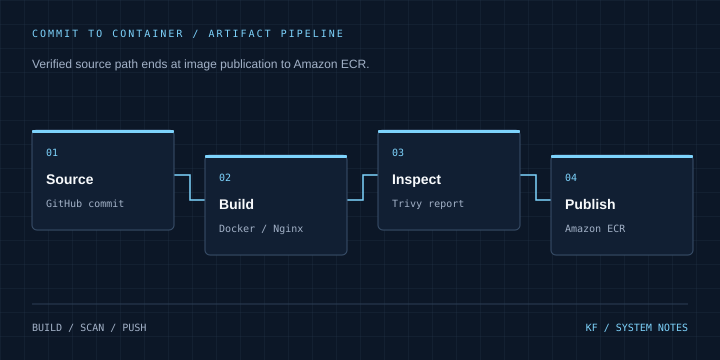

02 / CLOUD & DEVOPS / CASE STUDY
Container delivery on AWS
A traceable path from a Git commit to a container registry.
CI/CD lab Inspect source on GitHub ↗
Architecture
GitHub commit → Docker build → Trivy report → Amazon ECR
Problem & context
A containerized web application needs a repeatable image build and a traceable release artifact.
Objectives
Build a Docker image in CI, inspect it with Trivy and publish commit-tagged artifacts to Amazon ECR.
My role & project work
Repository work includes a non-root Nginx Dockerfile and GitHub Actions build, scan and ECR publication workflow.
Technical implementation
The workflow builds on main/master pushes, tags images with the commit SHA and latest, runs Trivy, then pushes both tags to ECR. The Dockerfile switches to a non-root app user.
Engineering decisions
Commit SHA tags connect an artifact to a source revision. The scan uses exit-code 0, so it reports findings without blocking publication. This is visibility, not an enforced security gate.
Challenges & solutions
The README describes Terraform and EKS resources that are absent from the reviewed source tree. The portfolio limits its claims to the Dockerfile and ECR pipeline that can be inspected.
Testing & verification
Reviewed README.md, Dockerfile, .github/workflows/deploy.yml and the complete tree. No Terraform directory or Kubernetes manifest was present. The workflow was not executed and no AWS resources were inspected.
Current status
Source implementation reviewed; current AWS deployment and build success are unverified. No uptime, failover, cost-saving or vulnerability-elimination result is claimed.
Lessons & next steps
Artifact publication and application deployment are separate stages. A future iteration can add enforced scan thresholds, pinned actions, OIDC credentials and a verified deployment stage.